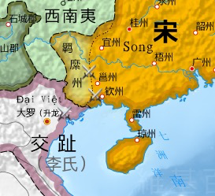
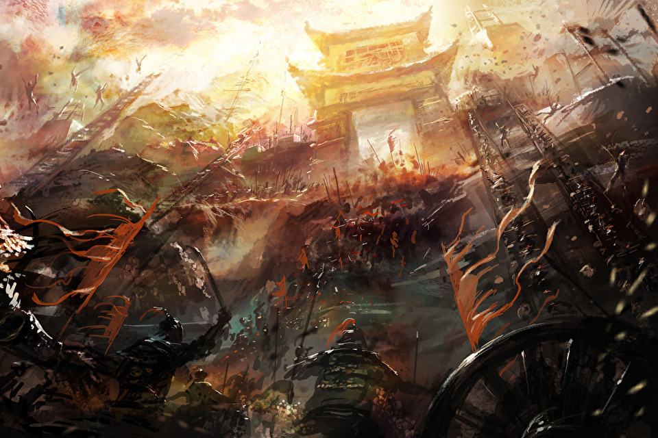

Các chiến công nổi bật
Lý Thường Kiệt được biết đến là một trong những tướng lĩnh vĩ đại nhất trong lịch sử Việt Nam với nhiều chiến công lừng lẫy. Dưới đây là một số chiến công nổi bật của ông:
1. Cuộc kháng chiến chống quân Tống (1075-1077):
- Bối cảnh: Năm 1075, triều đại nhà Tống phát động chiến tranh xâm lược Đại Việt.
- Chiến dịch Như Nguyệt: Năm 1076, Lý Thường Kiệt tổ chức phòng thủ tại biên giới, chuẩn bị cho cuộc xâm lược của quân Tống.
- Trận đánh tại sông Như Nguyệt (1077): Ông đã chỉ huy quân đội đánh bại quân Tống, sử dụng chiến thuật linh hoạt, kết hợp giữa phòng ngự và phản công.
Hậu quả: Cuộc chiến này đã buộc quân Tống phải rút lui, bảo vệ vững chắc lãnh thổ Đại Việt.
2. Chiến dịch xâm lược phương Bắc:

- Năm 1076: Sau khi chiến thắng tại Như Nguyệt, Lý Thường Kiệt quyết định tấn công vào đất Tống để trả thù.
- Hành quân vào đất Tống: Ông dẫn quân vào sâu trong lãnh thổ Tống, chiếm đóng nhiều thành trì, gây hoang mang cho quân địch.
- Tác động: Chiến dịch này không chỉ thể hiện sức mạnh quân sự của Đại Việt mà còn gửi đi thông điệp mạnh mẽ về chủ quyền và lòng tự hào dân tộc.
3. Chiến dịch đánh chiếm thành Ung Châu:

- Mục tiêu: Ung Châu là một thành trì quan trọng của quân Tống, nằm ở vùng biên giới phía Bắc.
- Diễn biến: Lý Thường Kiệt đã chỉ huy một cuộc tấn công quy mô lớn, sử dụng chiến thuật bao vây và tấn công liên tục. Quân Tống không thể kháng cự và đã phải đầu hàng.
- Kết quả: Chiến thắng này không chỉ tạo ra một cú sốc lớn cho quân Tống mà còn khẳng định sức mạnh của quân đội Đại Việt.
4. Đánh bại quân Chiêm Thành:
- Bối cảnh: Trong thời kỳ này, quân Chiêm Thành cũng có những cuộc tấn công vào lãnh thổ Đại Việt.
- Chiến dịch: Lý Thường Kiệt đã tổ chức các cuộc tấn công vào Chiêm Thành, đánh bại quân địch và mở rộng lãnh thổ về phía Nam.
- Kết quả: Những chiến thắng này đã góp phần củng cố vị thế của Đại Việt trong khu vực.
5. Chiến thắng tại các trận đánh nhỏ khác:
- Trận đánh tại Chi Lăng: Đây cũng là một trong những trận đánh tiêu biểu, nơi Lý Thường Kiệt đã thể hiện tài năng chiến thuật xuất sắc.
- Phòng thủ biên giới: Ông đã tổ chức nhiều trận đánh nhỏ để bảo vệ biên giới, ngăn chặn các cuộc xâm lược từ phương Bắc.